Using GPT-6 Astra
with Blender:
A 3D Laboratory for Graph Theory, GIS, and Spatial Economics
A city can be more than a picture. Give every street an explicit connection and every building an address in a coordinate system, and the model becomes a place to ask mathematical questions.
This project actually generates the editable city, calculates its network, renders its analytical views, and runs its disruption experiments. Begin with a cube; finish with a small, inspectable spatial model.
A 24-second tour of the city constructed procedurally by GPT-6 Astra through Codex using Blender Python. Every building remains editable in the downloadable Blender scene.
Locally generated geometry includes twelve architectural families, seven branching tree archetypes and 48 pedestrians. The coral line is existing transit; twelve pedestrians have simple walking animation.What did Astra build?
A fictional 392 × 338 metre diorama contains 36 blocks: 34 developed blocks with six buildings each, plus two parks. Four neighbourhoods have different material palettes and height profiles. Two road crossings join the riverbanks. Four stations form an existing eastern transit line; a proposed cross-river connection is a separate scenario.
One JSON file records positions, building parameters, road edges, transit costs and opportunities.
Python constructs shared meshes, named objects, materials, cameras and lights.
Shortest paths, centrality, accessibility and 1,200 disruption trials use the recorded graph.
Blender files, rendered images, animated experiments, GLBs and validation reports are downloadable.
What exactly is Blender?
Blender is an application for creating, organizing, animating and rendering three-dimensional scenes. Its interface is one way to construct a scene. Its Python API, bpy, exposes the same underlying data so a script can build a scene from explicit rules.
Think of a building as a named object placed in space. Its mesh describes the surface. Its materials describe how that surface responds to light. The camera chooses a view; the renderer calculates the image.
- Object
- A named scene item with a position, rotation and scale. Each B### building is one object.
- Mesh
- The geometric data used by an object. Multiple buildings can refer to one shared mesh.
- Vertex
- A point in a mesh. An ordinary cube has eight corner vertices.
- Edge
- A connection between two mesh vertices. A cube has twelve; these are different from transportation-graph edges.
- Face
- A surface bounded by mesh edges. A cube has six quadrilateral faces; exporting it as triangles produces twelve triangles.
- Material
- Surface colour, roughness, metallic response and optional emission. Blue glazing is a material on facade faces.
- Collection
- A named group of objects. Roads, buildings, trees and graph overlays live in separate collections.
- Modifier
- A reversible operation on evaluated geometry, such as beveling corners or making a linear array.
- Camera
- The scene viewpoint and projection. The static overview uses an orthographic camera; the cinematic reel uses perspective cameras.
- Light
- A source of illumination. This scene combines a sun, large area lights and world illumination.
- Render
- An image computed from geometry, materials, camera and lighting. A frame sequence becomes an animation.
- .blend
- The editable Blender project: objects, mesh relationships, materials, scene settings and animation data.
- glTF / GLB
- A browser-oriented scene format. GLB packages its scene description and binary geometry into one file; it does not preserve every Blender feature.
- bpy
- Blender’s Python module. Run the scripts with Blender’s Python interpreter, not an ordinary Python process that lacks Blender.
From a primitive cube to a finished building
{kind=link}
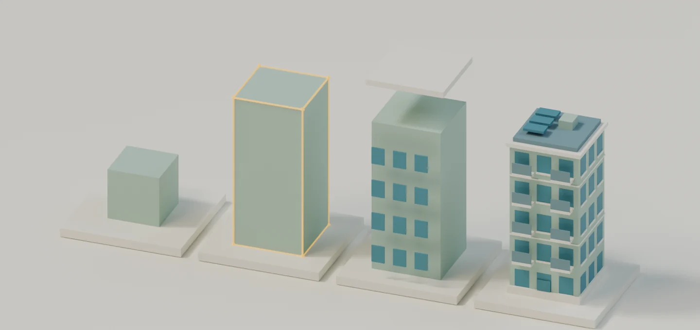
Scaling a cube changes its dimensions without increasing its vertex count. Adding facade panes and roof geometry changes the mesh itself. Materials can vary across faces within the same mesh, so a window does not need to be a separate object.
The generator constructs twelve architectural families in normalized local coordinates. For building $b$, a local point $(u,v,w)$ is placed in the city as:
Here $(x_b,y_b)$ is the building’s ground position in metres; $s_{x,b}$, $s_{y,b}$ and $s_{z,b}$ are its width, depth and facade-height parameters. The 0.65 m offset puts the building on the sidewalk. The local body runs from $w=0$ to $w=1$; roofs extend above it.
A 10 × 9 × 20 m building therefore uses scale (10, 9, 20). A pitched roof with local ridge height 1.22 reaches 24.4 m above the building base. Facade height and total roof height are intentionally distinct quantities.
def object_from(name,mesh,c,location=(0,0,0),scale=(1,1,1)):
o=bpy.data.objects.new(name,mesh); c.objects.link(o); o.location=location; o.scale=scale; return oActual helper from build_city.py. It creates an object that references an existing mesh, then assigns its transform. In Blender, select a B### object to move or scale it. To change only its topology, make its mesh single-user first; otherwise edits propagate to its linked siblings.
A city is a system of rules
The generation seed is 260905. The original 8-column by 7-row grid has 48 m spacing. Eight outer promenade junctions, their feeder links and two diagonal park paths add alternative walking routes. Most horizontal connections across the central river are omitted; only the crossings at $y=-96$ m and $y=48$ m remain. Building slots sit inside the non-river blocks, with small seeded variations in width, depth, height and archetype.
Twelve shared architectural families provide cottages, townhouses, brick commercial buildings, apartments, civic forms and modern towers. The east bank draws from taller archetypes, and Innovation District applies a further height multiplier. This is a design rule, not a discovered relationship between location and development.
{kind=link}
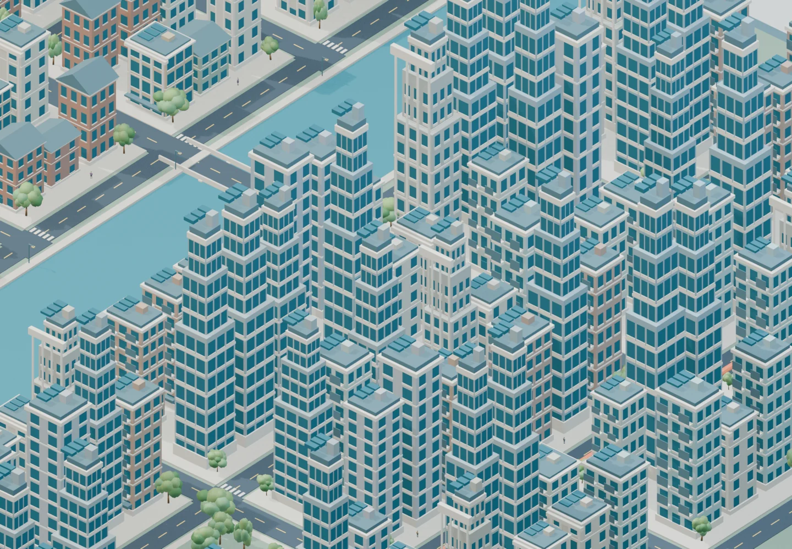
Direct mesh construction avoids thousands of expensive add-object operations. Window panes are faces; sills are small boxes already included in the archetype mesh. Sidewalks, 64 intersection surfaces and ordinary lane markings are each batched. Crossing-specific markings stay separately addressable so the failure animation can remove the complete crossing.
Turning streets into a graph
Stand at an intersection and list the streets you can enter. This is the local meaning of a graph. Our road graph has one node per intersection or path junction and one undirected edge per traversable road or footway connection. Directional turn restrictions and traffic lanes are outside this model.
$G_R$ is the road graph, $V$ its set of intersection IDs and $E_R$ its road-edge set. Each edge has endpoints, a centre-line length in metres and a positive travel cost in seconds.
{kind=link}
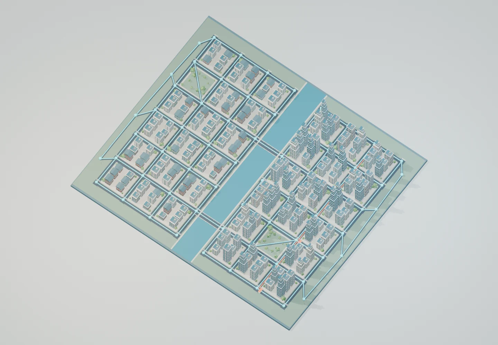
{kind=link}
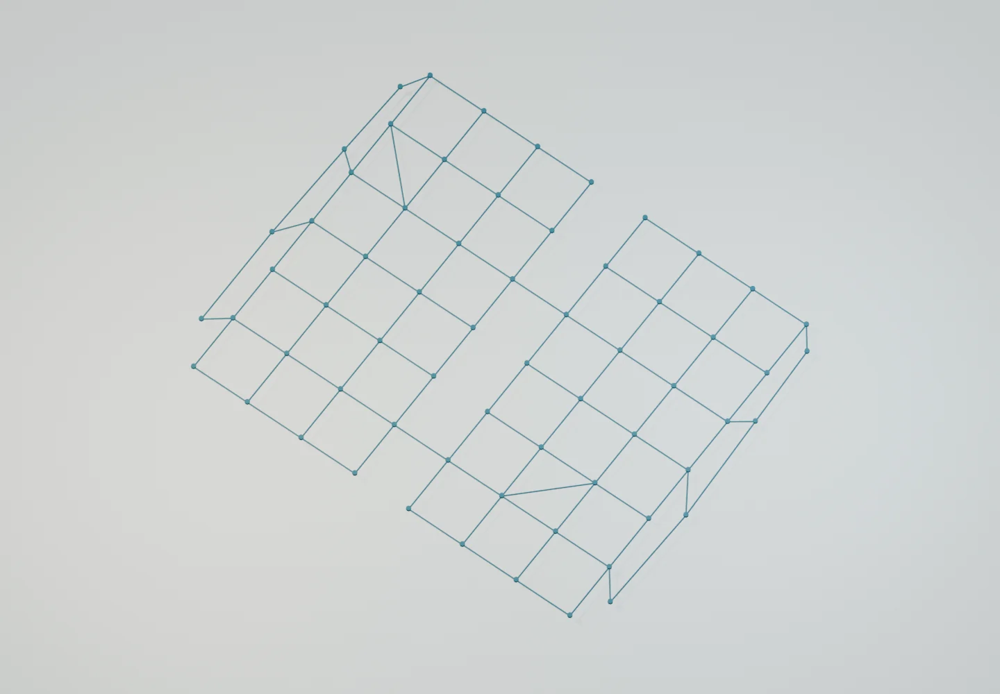
The JSON edge {"u":35,"v":36,"length_m":48,"seconds":36} becomes the Blender object Road_35-36. Its centre is the average of the two node positions. The script generates road surfaces from this edge list, and the validator checks every midpoint, length and cost against it.
For accessibility we form a second graph $G_T=(V,E_R\cup E_T)$ by adding three existing transit edges between four stations. The proposed scenario adds one more transit edge. Centrality, degree and the random road-failure experiment use $G_R$; accessibility before and after uses the explicitly stated transit graphs.
The shortest path is a result, not a drawing
Travel from node 40 at $(-168,96)$ to node 47 at $(168,96)$. The shortest road route crosses the northern bridge. Every regular 48 m grid segment costs 36 seconds at the assumed walking speed of 80 m/min.
$\ell_e$ is road-edge length in metres, $c_e$ its walking cost, $P$ a path from source $s$ to target $t$, and $d_G(s,t)$ the least total cost. Edge costs are rounded to the nearest second before routing; this matters for the diagonal and irregular links. The scripts store $60c_e$ as integer seconds; accessibility calculations use minutes.
The computed path is 40 → 33 → 34 → 35 → 36 → 37 → 38 → 39 → 47: 8 edges, 403.88 m and 5.05 minutes. Dijkstra’s algorithm is appropriate because all edge costs are positive. Equal-cost routes can exist; one valid shortest route is displayed.
Try different endpoints
This browser explorer runs Dijkstra on the same JSON road edges. Closing the northern crossing removes edge 35–36 and recalculates the route.
Node 40 → 47: 403.88 m · 5.05 minutes.
{kind=link}
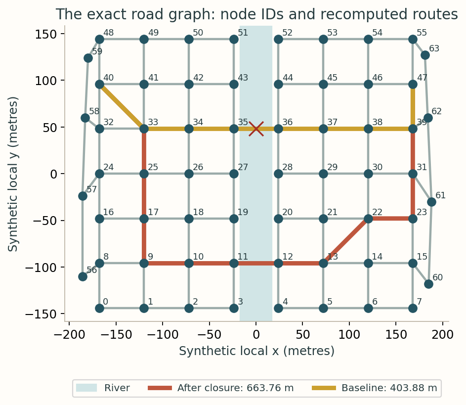
Degree counts choices; betweenness counts reliance
A node of degree four has four immediate road choices. That does not guarantee that it lies on many long journeys. The endpoints of a scarce river crossing can have ordinary degree but high betweenness because many shortest paths pass through them.
$k_i$ is node $i$’s degree. The indicator is one if nodes $i$ and $j$ share a road edge, and zero otherwise. Each undirected edge contributes once to each endpoint, which explains the factor of two.
{kind=link}
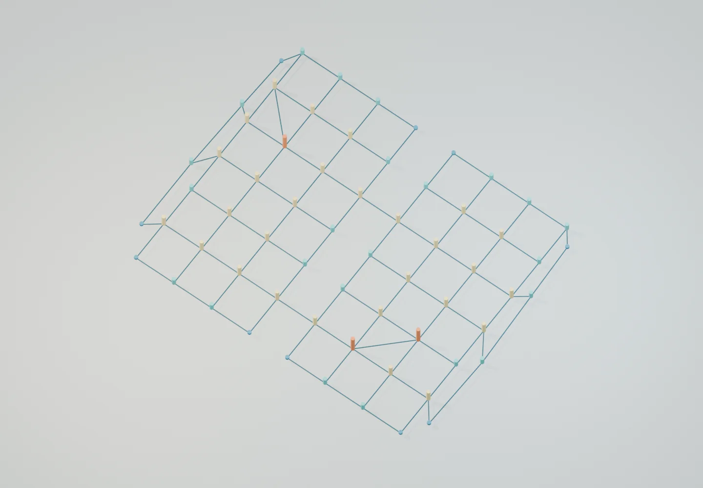
For betweenness, consider every unordered pair of other nodes. If several equally short routes exist, split that pair’s contribution among them rather than choosing one arbitrarily.
$B(v)$ is normalized, endpoint-excluding betweenness of node $v$; $\sigma_{st}$ counts shortest $s$–$t$ paths and $\sigma_{st}(v)$ counts those passing through $v$ internally. The normalization is the number of eligible unordered pairs. All-pairs paths use integer-second road weights.
{kind=link}
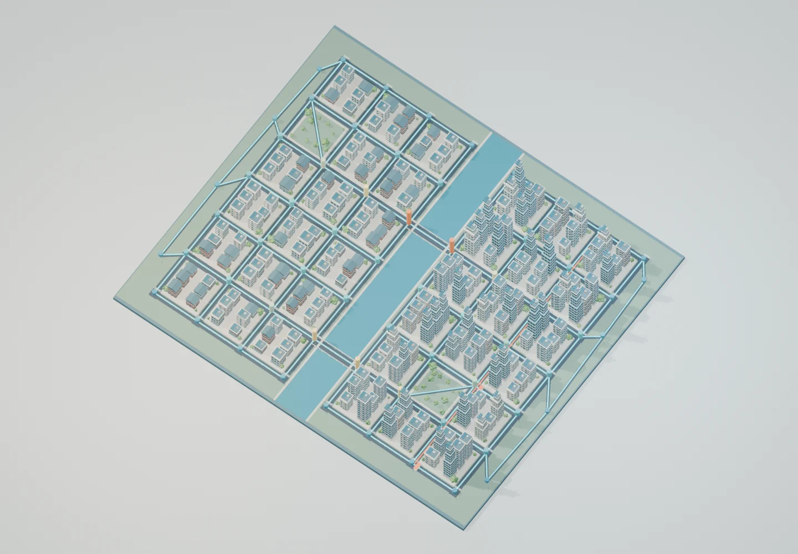
Definition and implementation reference: NetworkX betweenness documentation. High betweenness is structural dependence under these shortest-path assumptions, not observed traffic volume.
Coordinates, distances and neighbourhood membership
In this project, one Blender unit means one metre. The $x$ axis points along the grid’s west–east direction, $y$ along south–north, and $z$ upward. The origin is a local reference point near the river centre. There is no latitude, longitude, EPSG code or real-world georeferencing.
A projected coordinate reference system also expresses planar positions in units such as metres, but it comes with a specified projection, datum and relationship to Earth. A real GIS workflow would transform source data into an appropriate projected CRS, subtract a documented local origin to keep Blender coordinates numerically small, and preserve that transformation for export. Merely naming Blender’s axes does not perform a projection.
$d_{ij}^{\mathrm{Euclid}}$ is straight-line distance between nodes; $n(b)$ assigns building $b$ to its closest intersection. Ties use ascending node-ID order. The building record retains both this node and the straight-line snapping distance.
Nodes 35 and 36 are only 48 m apart. With their crossing removed, a straight line still has length 48 m, while walking through the southern crossing requires 336 m. Euclidean proximity and network proximity answer different questions.
Neighbourhood membership is an explicit block-generation rule based on riverbank and row, not a polygon overlay inferred afterward. All accessibility colours are inherited from the nearest node. Within-block walking links, entrances and barriers are not modeled; a building’s colour is an intersection-level proxy.
Descriptive statistics from the actual dataset
{kind=link}
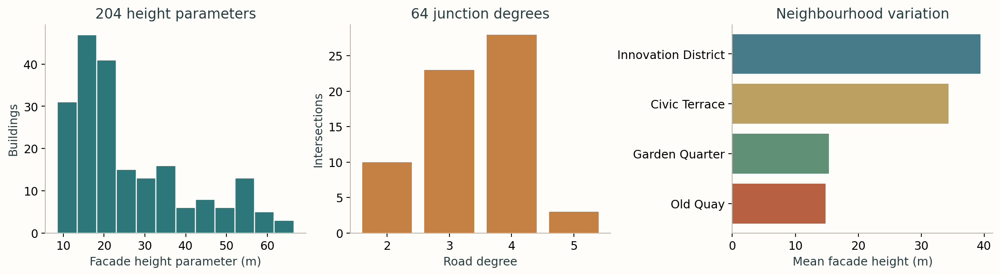
| Quantity | Calculated value | Interpretation |
|---|---|---|
| Facade height, mean / median | 26.03 / 20.27 m | 204 synthetic buildings |
| Facade height, minimum / maximum | 8.53 / 66.56 m | Roof height is not included |
| Population standard deviation | 14.75 m | Divide by 204, not 203: describing this complete synthetic population |
| Total road centre-line length | 5.232 km | Each undirected edge counted once |
| Road edge length | 19.21–90.09 m; mean 48.44 m | Grid roads, diagonal park paths and irregular outer promenades |
| Mean pairwise road travel time | 3.224 min | All 2,016 unordered pairs; excludes self-pairs |
| Maximum pairwise road time | 7.63 min | Positive integer-second walking costs |
A distribution is not automatically evidence of a real process. The height histogram summarizes our design choices and seed; it is not an empirical urban-height distribution. Replicating the experiment with other seeds would measure variation under this generator, not uncertainty about a real city.
Close the northern crossing
Remove only edge 35–36. Keep all other nodes, roads, opportunities and costs fixed, then run shortest-path calculation again. The source and destination remain connected through the southern crossing.
| Scenario | Road length | Walking time | Change |
|---|---|---|---|
| Both crossings available | 403.88 m | 5.05 min | Baseline |
| Northern crossing removed | 663.76 m | 8.30 min | +259.88 m, +3.25 min, +64.36% |
The visualization removes the road surface, rail geometry and its own marking batch. It does not simulate structural collapse, queue formation, congestion or emergency response. Those would require additional physical or behavioral models.
Monte Carlo network resilience
One deliberate closure answers one question. To explore many disruptions, independently delete each of the 108 road/footway edges with probability $p$, keep all 64 nodes, and recompute all-pairs costs. The experiment uses $p\in\{0.03,0.08,0.15\}$ and 400 repetitions at each level: 1,200 trials in total. The random stream is seeded and consumed in a fixed order after building generation.
$D_e^{(r)}=1$ means edge $e$ fails in trial $r$; $E_R^{(r)}$ is the surviving road set; $R=400$ is the number of trials for one $p$; $\widehat q$ estimates the probability that at least one pair of nodes becomes disconnected. Failures are independent across edges and trials. Transit is excluded from this road-resilience experiment.
{kind=link}
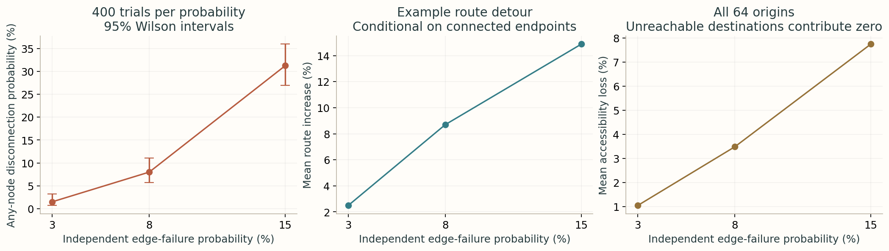
| Edge failure p | Disconnected graphs | Probability | Example pair disconnected | Mean detour, connected pair only | Mean accessibility loss |
|---|---|---|---|---|---|
| 3% | 6 / 400 | 1.50% | 0 / 400 | 2.49% | 1.05% |
| 8% | 32 / 400 | 8.00% | 3 / 400 | 8.70% | 3.49% |
| 15% | 125 / 400 | 31.25% | 13 / 400 | 14.88% | 7.75% |
At $p=0.08$, 32 of 400 graphs disconnect: $\widehat q=0.0800$, with a Wilson interval of [0.0572, 0.1108]. Yet the chosen endpoint pair disconnects in only 3 trials. “The graph disconnects” and “this journey becomes impossible” are different outcomes.
{kind=link}
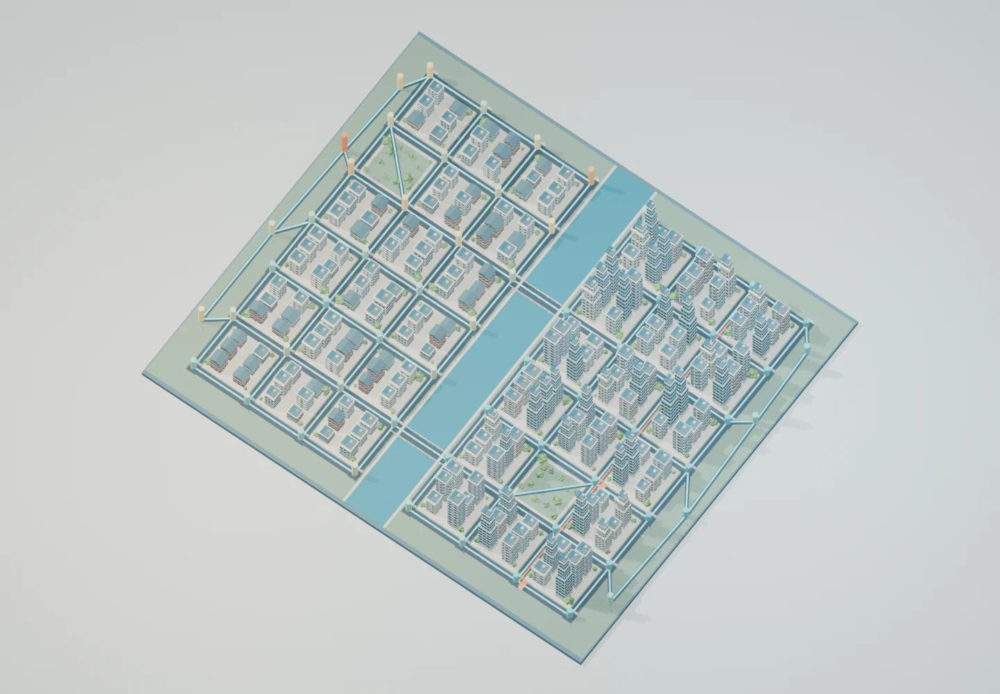
How the uncertainty interval and loss are calculated
A symmetric normal approximation can be misleading near zero. The Wilson interval uses the following centre and half-width:
The interval is $[m-h,m+h]$ with $z=1.96$, an approximate 97.5th percentile of the standard normal distribution. $R$ and $\widehat q$ have the definitions above. This interval quantifies simulation sampling error under the specified failure law.
The loss map averages $100(1-A_i^{(r)}/A_i^0)$ over all trials, where $A_i^0$ is baseline road-only accessibility and $A_i^{(r)}$ uses trial $r$’s disrupted road costs. The next section defines $A$. Unreachable destinations contribute zero; disconnected origins are never silently dropped.
Independent random road failures are a deliberately simple stress test. Floods, earthquakes and maintenance often close spatially correlated edges. No hazard map, traffic demand, capacity constraint or repair process is included. The 400 trials at each level are repetitions of one synthetic network, not 400 independently sampled cities.
Access to opportunities, before and after transit
A place is accessible when many useful destinations can be reached at low travel cost. Here, every node receives ten synthetic opportunity units. Buildings contribute additional units to their nearest node according to their facade height and neighbourhood: three units per complete three metres of height, or six in Innovation District. These are designed attractiveness weights, not observed jobs, population or money.
$A_i$ is accessibility at origin $i$ in weighted synthetic opportunity units; $O_j$ is opportunity at destination $j$; $c_{ij}$ is minimum generalized travel time in minutes; $\lambda$ controls sensitivity to travel cost. Include $j=i$ with $c_{ii}=0$. If $j$ is unreachable, set $c_{ij}=\infty$ and its contribution to zero.
For example, a destination offering 100 units contributes about 69.77 units at two minutes, but only 23.69 at eight minutes. The half-weight travel time is $\log(2)/0.18\approx3.85$ minutes. This decay rate is an illustrative parameter, not an estimated preference.
def accessibility(dist, opportunities):
# np.exp(-inf) = 0 implements unreachable destinations without dropping origins.
return np.exp(-LAMBDA*dist) @ np.asarray(opportunities)The three existing transit connections link nodes 6–22–38–54 along the east bank. Each 96 m segment costs 24 seconds in-vehicle at 240 m/min plus a 30-second boarding/transfer penalty: 54 seconds total. The proposal connects nodes 33 and 38 across 240 m at a total cost of 90 seconds. Both directions are available.
This compact graph charges the penalty on every transit edge, even across consecutive existing segments. It does not track whether someone stays on the same vehicle. A more realistic transit model would expand the state space to distinguish station, route, boarding and transfer states. The proposed straight connection is a schematic corridor with an assigned cost, not an engineered alignment or a funded infrastructure plan.
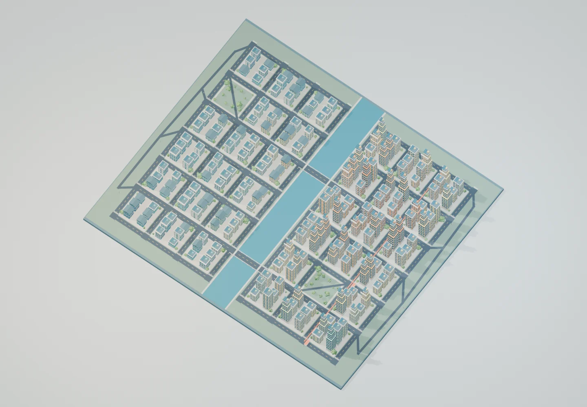
Before: four stations serve the existing eastern transit corridor.
Both images use the same numerical colour scale. Only the assigned node accessibility changes the building facade colour; roof and glazing materials remain fixed. Lighting affects perceived brightness.
{kind=link}
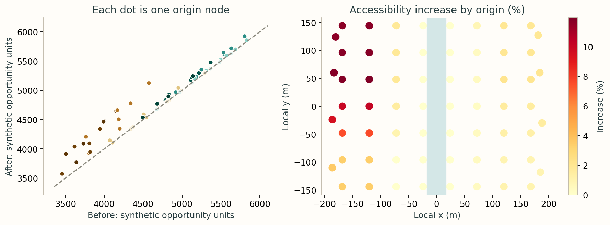
Mean node accessibility rises from 4717.46 to 4844.43 units, a 2.69% increase in the mean. This is the percentage change in two arithmetic means, not the mean of node percentage changes. The largest individual-node increase is 11.96%.
Procedural engineering and Blender performance
The preliminary six-building capability test used 848 mesh objects. It proved that geometry, rendering and export worked, but its window-by-window object structure would scale poorly. The city uses a different representation: twelve shared building meshes, one object per building, shared tree and lamp meshes, and joined static batches.
| Representation | Master city | Browser export |
|---|---|---|
| Building identity | 204 named B### objects with node and neighbourhood properties | 204 building nodes retain IDs in glTF extras |
| Repeated architecture | Twelve linked architectural families; joined panes, sills and roof details | Twelve simplified architectural families; flat window faces, fewer roof parts |
| Vegetation and furniture | 162 trees / seven shared meshes; 64 lamps / one mesh | Seven simplified tree meshes; shared lamp geometry |
| Human scale | 48 pedestrians / six clothing families; twelve animated instances | Six simplified static pose meshes; no walking morph payload |
| Road system | One road object per graph edge; batched junctions and regular markings | Same street layout and identity |
| Analytical modes | Hidden collections; parameter-driven materials and glyphs | Separate 4,816-triangle graph GLB |
| Lighting and cameras | Three cameras, sun, two studio area lights and world | Excluded; the browser provides viewing light |
| Geometry count | 676,260 instanced triangles | 257,840 instanced triangles |
Shared meshes save storage; they do not erase drawing cost
A mesh datablock stores the archetype once, while object transforms place it repeatedly. The renderer still draws the geometry for every visible instance. The report therefore provides both unique mesh triangles and instance-expanded triangles. Material groups may create multiple browser draw calls; a small download alone does not guarantee fast rendering on every phone.
Topology and level of detail
Closed box components use outward-wound quads; the export triangulates them. Window panes are intentional surface faces with small offsets, and archetypes contain disconnected decorative components. The meshes are suitable for visualization, not guaranteed watertight solids for fabrication. The validator checks empty meshes and finite coordinates, but does not certify manifoldness or perform full collision detection.
The master retains floor bands, window sills and roof details. The web version removes those details from its archetypes before export and omits studio and analytical objects. It is a separate level of detail generated in memory after the master is saved. The compressed master happens to be smaller on disk than the GLB; the browser model is nevertheless substantially lighter in instance-expanded geometry.
Modifiers, arrays and Geometry Nodes
The prototype used bevel and weighted-normal modifiers. This city deliberately uses explicit low-poly geometry with no building modifiers to evaluate at render time. Arrays would be a reasonable option for facade editing; here, Python batches the same repeated elements directly into archetype meshes. Geometry Nodes is not used because mesh reuse already solves the repetition problem without another system to debug.
Composition and rendering
The static overview uses an orthographic camera; a second gives the close-up and a third looks more steeply downward for analytical clarity. The 24-second hero retains five perspective shots, including a lower street tracking shot with people and foreground trees. City stills and the hero use Eevee at 16 samples; analytical videos use 12 samples. One sun casts shadows, with broad area-light fill. Image-space glyphs and schematic transit offsets improve visibility without changing network costs.
Animation is editable data
The three animation files contain keyframes. Route markers interpolate along actual path segments. The closure switches object visibility at frame 113; the transit animation interpolates material colour after a new edge appears. Each 224-frame analytical animation uses four smooth camera shots and is encoded as 960 × 540 H.264 at 16 fps: 14 seconds, yuv420p, BT.709, fast-start metadata and no audio. Raw frames remain outside the repository.
Rotate the city yourself
The interactive export keeps buildings as distinct nodes and uses 257,840 triangles when instances are counted. Loading is optional. The image remains available if WebGL or JavaScript is unavailable.
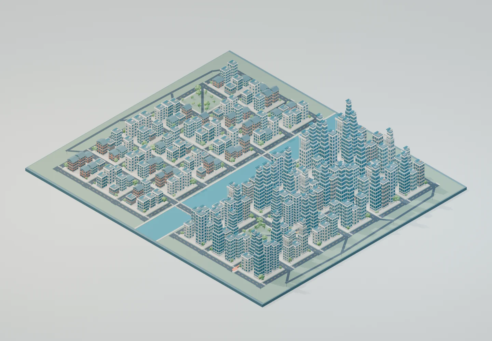
The model has not been downloaded. Select a model above to begin.
Drag to rotate, scroll or pinch to zoom. This viewer does not expose Blender editing or per-building inspection panels; use the .blend file for those. Download the city GLB or the graph GLB. The pinned, locally bundled model-viewer module adds the browser controls.
What Astra generated and what I checked
The “checked” record below describes automated and agent-assisted inspection performed in this project. It does not claim that the site author has already reviewed the result. Human browser and Blender review is the next step.
| Generated by the agent | Concrete check performed |
|---|---|
| Seeded city and twelve architectural families | Reopened saved master; counted building IDs and twelve shared meshes; checked empty meshes, materials, finite transforms and dimensions |
| 108 road/footway meshes and graph overlays | Compared every edge midpoint, length and cost, and every node glyph coordinate, against city.json; checked its embedded SHA-256 |
| Shortest paths and access values | All 4,096 Floyd–Warshall entries matched independently computed Dijkstra costs; checked degree sum and monotone accessibility |
| City and graph GLBs | Parsed GLB headers and buffers, counted per-instance triangles, checked embedded building IDs, then reimported both into Blender |
| Renders and animation | Inspected rendered views; corrected coplanar road overlap and camera clipping; decoded all videos and checked durations and dimensions |
| Standalone HTML and viewer | Served over local HTTP; checked asset responses, desktop/mobile overflow, equation rendering, graph controls, GLB loading and video playback in Chromium |
Reports: scene and GLB validation · mathematical consistency · independent full-trial replay · previous/revised measurements · local browser and asset QA. The full terminal logs are retained with the source artifacts.
| Measured characteristic | Recorded value |
|---|---|
| Blender | 4.5.13 LTS |
| Seed | 260905 |
| Blender master objects / meshes | 676 / 670 (includes hidden analytical objects) |
| Buildings / shared building meshes | 204 / 12 |
| Road nodes / edges | 64 / 108 |
| Trees / tree archetypes | 162 / 7 |
| Pedestrians / animated | 48 / 12 |
| Existing transit / proposed edges | 3 / 1 |
| Master polygons / triangles | 352,464 / 676,260, instance-expanded |
| Master unique triangles | 69,418 |
| City GLB triangles | 257,840 instance-expanded; 31,924 stored across unique exported meshes |
| Compressed master .blend | 697,223 bytes |
| City GLB | 1,366,104 bytes |
| City still resolution | 1440 × 1000; anatomy 1440 × 680 |
| Monte Carlo trials | 400 × 3 = 1,200 |
| Graph/data computation | 1.304 s; NetworkX 3.6.1 |
| Master construction and export | 1.188 s inside Blender, excluding process startup |
| City still render time | 59.1 s total across 11 timed city views; anatomy excluded |
| Analytical frame rendering | 1705.7 s total; hardware-specific |
Regenerate locally
The website itself has no build system or package installation step. Regeneration uses Python libraries and Blender as offline authoring tools. The scripts locate their output directory relative to their own files.
# From the repository root. Substitute your Blender executable if needed.
python3 -m venv /tmp/astra-city-env
/tmp/astra-city-env/bin/pip install -r research/gpt-6-astra-blender/requirements.txt
/tmp/astra-city-env/bin/python research/gpt-6-astra-blender/scripts/generate_data.py
/tmp/astra-city-env/bin/python research/gpt-6-astra-blender/scripts/generate_charts.py
/tmp/astra-city-env/bin/python research/gpt-6-astra-blender/scripts/run_blender_pipeline.py \
--blender "$HOME/Documents/astra-blender-test/blender-4.5.13-linux-x64/blender"
/tmp/astra-city-env/bin/python research/gpt-6-astra-blender/scripts/package_assets.py
/tmp/astra-city-env/bin/python research/gpt-6-astra-blender/scripts/build_page.py
python3 -m http.server 8000 --bind 127.0.0.1FFmpeg with libx264 must be on PATH for video encoding. The seed fixes geometry and simulation draws; rendering can vary slightly with Blender version, hardware and denoiser. The original portable Blender installation is reused, but none of the preliminary test’s output files are copied into this project.
Complete original OpenCode implementation prompt
The supplied project request, including its performance guidance, is retained verbatim below. It describes the requested workflow; the execution provenance is stated near the beginning of this page.
Download the prompt as plain textThe preliminary Blender capability test has succeeded.
You successfully created and validated the scene in:
~/Documents/astra-blender-test
The test produced a visually good isometric urban scene, a working .blend
file, a GLB export, a render, and validation results with no execution
errors.
We are now proceeding to the actual GitHub research project.
You MAY now modify the repository in the current working directory:
~/Documents/nareshpane.github.io
Before starting, inspect the successful preliminary Blender test and reuse
any useful techniques from it, but do not copy its temporary output files
into the repository unless they are genuinely useful.
IMPORTANT LESSON FROM THE TEST
The six-building test contained approximately 848 mesh objects. This is
acceptable for the experiment but is much too object-heavy to scale
proportionally to a city with hundreds of buildings.
For the full project, optimize Blender scene structure deliberately.
In particular:
- keep individual buildings logically identifiable and editable
- do not make every repeated window, road dash, tree component, or decorative
detail an unnecessarily independent mesh object
- use linked duplicates, collection instances, shared meshes, instancing,
arrays, joined static geometry, or other appropriate Blender techniques
for repeated elements
- use reusable building archetypes where useful while retaining visible
architectural variation
- batch road markings and other repeated static elements where appropriate
- avoid an excessive Blender object count
- keep polygon counts reasonable
- make the browser GLB substantially lighter than the master .blend scene
when necessary
- create a web-export version separately from the high-quality Blender scene
if this improves performance
- report both Blender object counts and web-model triangle counts
The goal is not merely to create a much larger version of the test scene.
The goal is to demonstrate good procedural 3D engineering.
Now implement the full project described in the following specification.
Do the implementation, generation, rendering, mathematical calculations,
validation, HTML construction, asset organization, and local testing in one
substantial working session.
Do not commit or push the repository yet. I will inspect the finished page
locally first.I want you to build a new research page in my existing GitHub Pages
repository. Work directly inside the current repository and first inspect
the existing files before making changes.
PROJECT TITLE
Using GPT-6 Astra with Blender:
A 3D Laboratory for Graph Theory, GIS, and Spatial Economics
PRIMARY OBJECTIVE
Create a richly visual and technically rigorous research/tutorial page
showing how GPT-6 Astra, operating through OpenCode, can use Blender and
Blender Python to construct a fully editable synthetic 3D city and then use
that city as a visual laboratory for graph theory, GIS, transportation
networks, statistics, simulation, and spatial economics.
The page must be understandable to a beginner at the beginning and
progressively become more technical. By the end, it should contain material
that is useful to an advanced undergraduate, graduate student, programmer,
statistician, economist, GIS analyst, or mathematically sophisticated reader.
This is not intended to be a generic article about Blender or GPT-6 Astra.
Actually build the Blender scene, scripts, renders, models and animations
described below.
REPOSITORY STRUCTURE
Inspect:
research/erdos-renyi-1960.html
and use it as the main reference for the structure, typography, navigation,
spacing, visual language, code presentation, mathematical presentation and
general aesthetic of the new page.
Also inspect other recent research pages and their asset directories where
useful. Reuse existing site-wide conventions rather than creating an
unrelated visual design.
The main HTML file must be:
research/gpt-6-astra-blender.html
All project-specific non-HTML assets must be placed somewhere beneath:
research/gpt-6-astra-blender/
You may create sensible subdirectories such as:
blender/
scripts/
data/
models/
renders/
video/
Do not scatter project assets elsewhere in the repository.
Also update the existing root research.html page so this new project appears
at the TOP of the research-project listing. Preserve the existing page and
do not alter unrelated content.
PROJECT NOTE
Near the beginning of the new page include a short, tasteful note explaining:
"The implementation prompt for this project was drafted in ChatGPT using
GPT-5.6 Sol with high reasoning effort. The project was then implemented and
iterated in OpenCode using GPT-6 Astra."
Do not overemphasize this note.
BLENDER APPROACH
Prefer reproducible procedural Blender generation using Python and bpy.
Do not depend on manually clicking through the Blender GUI when the same
result can be generated programmatically.
Determine the installed Blender version and write scripts compatible with it.
Create a master Blender scene representing a synthetic modern city.
The city should be attractive enough to serve as an impressive standalone
3D render, but its layout should also have a mathematically explicit graph
structure.
Use a deterministic random seed so the city can be regenerated.
The scene should contain, at minimum:
- multiple city blocks
- a road network
- intersections
- sidewalks or block boundaries
- approximately 200 or more individual buildings where practical
- varied building heights
- several visually distinct neighbourhoods
- trees or simple urban vegetation
- street furniture where computationally reasonable
- a transit line
- multiple transit stations
- a bridge or other network bottleneck
- water, terrain, park, or similar geographic context
- appropriate cameras
- appropriate lighting
- attractive materials
All geometry should be generated locally.
Do not download copyrighted commercial Blender assets.
Organize Blender objects into clearly named collections.
Keep individual objects logically editable. Do not unnecessarily collapse the
entire scene into one mesh.
GRAPH THEORY
Represent the transportation system explicitly as a graph G=(V,E).
Intersections and/or stations should correspond to nodes.
Road or transit connections should correspond to edges.
Store the underlying graph information in a simple inspectable format such as
JSON.
Create visual modes or derived Blender scenes showing:
1. the complete attractive city
2. the city with graph nodes and edges overlaid
3. a graph-only representation
4. node degree
5. betweenness centrality
6. a shortest-path example
Explain each concept in intuitive language before introducing formulas.
For a shortest-path demonstration, select two visually distant locations,
calculate an actual shortest path from the graph data, and animate the route
through the 3D city.
SPATIAL / GIS CONCEPTS
Explain how Blender's x-y coordinates can represent projected spatial
coordinates.
Explain coordinate systems conceptually without pretending the fictional city
has real-world geographic coordinates.
Show how geometry, distances, neighbourhood membership and network proximity
can be derived from spatial positions.
STATISTICS
Generate useful descriptive statistics for the synthetic city.
Examples can include:
- building-height distribution
- node-degree distribution
- road lengths
- travel costs
- accessibility values
Include actual calculated values rather than invented values.
Where appropriate generate charts programmatically and store the resulting
assets in the dedicated project folder.
NETWORK RESILIENCE EXPERIMENT
Make a bridge, transit segment or other connection act as an important
network bottleneck.
Create an animation in which this connection is removed.
Recalculate relevant routes.
Visually demonstrate how traffic paths or shortest paths change.
Then implement a Monte Carlo network-disruption experiment in Python.
Repeatedly remove appropriate random edges and calculate useful outcomes such
as:
- probability of disconnection
- increase in shortest-path distance
- accessibility loss
- nodes that repeatedly become critical
Use a fixed random seed and document the number of simulation repetitions.
Visualize at least one result directly in Blender.
SPATIAL ECONOMICS / ACCESSIBILITY
Introduce a simple illustrative accessibility function such as:
A_i = sum_j O_j exp(-lambda c_ij)
Define every term carefully.
Use synthetic opportunity values O_j and graph-derived travel costs c_ij.
Map accessibility back onto the 3D city.
For example, accessibility may affect:
- building colour
- emissive intensity
- transparent overlays
- columns or bars
- another clear 3D visual encoding
Then simulate the introduction of a new transit connection or station.
Show before and after accessibility.
Explicitly state that these are synthetic illustrative economic quantities
and are not estimates of a real causal policy effect.
BLENDER EDUCATION
The early portion of the article must teach basic Blender terminology
visually.
Explain:
object
mesh
vertex
edge
face
material
collection
modifier
camera
light
render
.blend
glTF / GLB
Where useful, create a simple exploded or sequential visual showing how one
building evolves from a primitive cube into a finished object.
Explain Blender Python and bpy.
Include selected short code excerpts from the project's actual scripts.
Do not overwhelm beginners with a full source dump in the main narrative.
ADVANCED BLENDER SECTION
Later in the page discuss more advanced topics actually relevant to this
project, including where appropriate:
procedural modelling
mesh topology
instancing
modifiers
object organization
performance
polygon counts
level of detail
materials
rendering
GLB export
animation
camera composition
deterministic generation
If Geometry Nodes genuinely improves part of the project, it may be used,
but do not introduce it merely to make the project appear complicated.
INTERACTIVE 3D
Export at least one optimized GLB version of the city.
Embed it in the HTML so a visitor on GitHub Pages can rotate, zoom and inspect
the model interactively.
A second lightweight graph-oriented GLB may also be generated if useful.
Use a reliable browser-compatible approach such as model-viewer or an
appropriately lightweight Three.js implementation.
Provide an image fallback.
Be mindful of GitHub Pages performance and asset size.
RENDERS AND ANIMATIONS
Produce several genuinely useful still renders. Aim for visual diversity such
as:
hero/isometric city
close-up city detail
wireframe or mesh view
graph overlay
shortest-path view
accessibility view
Produce useful animations where practical, including:
shortest-path animation
network disruption / bridge failure
before-after transit accessibility
Encode web video efficiently, preferably MP4/H.264 when supported.
Do not create huge unnecessary files.
WEBPAGE STRUCTURE
The article should have a strong visual hero section.
Progress from simple to complex.
A suitable conceptual progression is:
What did Astra build?
What exactly is Blender?
Prompt to editable geometry
Anatomy of a Blender object
Building one procedural building
Building a city
Turning streets into a graph
Shortest paths
Centrality
GIS and spatial coordinates
Statistics of the synthetic city
The bridge-failure experiment
Monte Carlo network resilience
Transit accessibility
Spatial economics interpretation
Inside the Blender Python scripts
Mesh and scene validation
Performance and optimization
Interactive GLB model
What Astra generated versus what was manually checked
Reproducibility
Complete OpenCode prompt
Files and source code
Limitations
Conclusion
You may improve this ordering after inspecting the existing website.
MATHEMATICS
Use MathJax if consistent with the existing website.
Every equation must define all notation.
Avoid jumping directly into abstract notation.
Always give a concrete city example before or immediately after a formula.
REPRODUCIBILITY
Create a section reporting actual project characteristics obtained from the
generated artifacts where feasible:
Blender version
generation seed
number of Blender objects
number of buildings
number of graph nodes
number of graph edges
polygon/triangle counts
GLB file size
render resolution
simulation repetitions
relevant generation/runtime information
Do not fabricate these values.
Generate a validation script that inspects the resulting Blender scene and
reports key counts and obvious problems.
If practical, check for:
missing objects
empty meshes
invalid dimensions
unexpected duplicate objects
non-finite coordinates
missing materials
export failures
Store validation output or summary information within the project asset
directory.
HUMAN VERIFICATION
Add a section titled approximately:
"What Astra generated and what I checked"
Explain that agentic generation is useful but outputs should still be
inspected.
Describe the concrete validation performed in this project rather than using
generic AI-disclaimer language.
PROMPT TRANSPARENCY
Include a collapsible section containing this original OpenCode prompt so
readers can see the instructions used to construct the project.
Follow the visual approach used by my other research pages for collapsible
content if such a pattern already exists.
DESIGN
The page should look polished and coherent with the rest of my website.
Prefer explanatory figures, diagrams, videos and interactive graphics over
large walls of text.
Use visual callouts where they improve understanding.
Do not use decorative complexity just for its own sake.
Keep typography readable.
Make it responsive on desktop and mobile.
Check for horizontal overflow.
Use semantic HTML and accessible alt text.
Do not use placeholders in the finished result.
QUALITY CONTROL
Inspect generated renders.
Inspect script outputs.
Verify that the graph calculations correspond to the graph actually used in
the Blender scene.
Verify that HTML asset paths work.
Verify that the GLB loads.
Verify that videos load.
Check browser console errors where practical.
Test the page locally.
Use an appropriate local HTTP server rather than relying on file:// behavior.
Do not alter unrelated pages.
Do not commit or push anything yet.
Finish the complete implementation and local QA in this session, then give me
a concise summary containing:
- files created
- files modified
- Blender artifacts generated
- important object/node/edge counts
- validation results
- exact command I should run to preview the site locally
- local URL for gpt-6-astra-blender.html
I will inspect the page in my browser before we commit or publish it.TARGET PERFORMANCE
As a guideline rather than an absolute requirement:
- aim to keep the optimized interactive GLB below roughly 20-30 MB
- avoid tens of thousands of independent Blender objects
- use instancing aggressively for repeating urban elements
- generate a separate optimized web scene if necessary
- do not sacrifice the master Blender scene merely to satisfy browser limits
- report actual measurements and explain any tradeoffs
Files and source code
Small scripts, explicit responsibilities
| Script | Responsibility |
|---|---|
| generate_data.py | Build the synthetic dataset; calculate exact network metrics and Monte Carlo outcomes |
| build_city.py | Construct the master and simplified GLBs from that dataset |
| world_assets.py | Generate shared branching trees, clothed people and lightweight walking poses |
| render_views.py | Set analytical modes, render the city and explain one building |
| render_animations.py | Save keyframes, render frame sequences and encode three MP4s |
| validate_blender.py | Inspect saved geometry and reimport exports |
| generate_charts.py | Plot the computed values |
| package_assets.py | Create efficient WebP derivatives and asset inventory |
| build_page.py | Assemble this page from measured results |
| qa_site.py | Test local HTTP assets and interactive browser behavior |
| run_blender_pipeline.py | Run Blender stages and retain logs |
Limitations and useful next experiments
The city retains a regular parcel grid, supplemented by diagonal park paths and irregular outer walking loops. It has one undirected walking network, simplified transit costs, fixed synthetic opportunity weights and a planar coordinate grid. Buildings have no interior layouts. Tree foliage uses clustered low-poly volumes and pedestrians have simplified faces and gait; windows are stylized surfaces. No real elevation, geographic location, mobility observation or economic outcome is inferred.
The current resilience experiment changes edges, not demand or capacity. A shortest path is an optimal route under fixed costs; it does not predict which routes people actually choose. Future experiments could add correlated flood zones, directed streets, turn penalties, transfer-aware transit states, heterogeneous opportunities and sensitivity analysis over the decay parameter.
Further engineering could batch web geometry by neighbourhood, adopt GPU instancing extensions, or add distance-dependent levels of detail. Those tradeoffs should be measured on representative devices: they can improve drawing performance while reducing per-building browser editability.
A model you can question
The useful achievement is the connection between editable geometry, explicit data and reproducible calculations. A bridge is a visible object and a named graph edge. A building has a spatial address and an inherited accessibility value. Changing an assumption produces a new calculation that can be traced back to both.
Open the model, inspect the route, alter a parameter, and rerun the scripts. The scene is a starting point for experiments whose assumptions remain visible.
Technical references
- Blender 4.5 Python API — scene data, meshes, objects, rendering and operators. The actual scripts were executed with 4.5.13 LTS.
- NetworkX: weighted betweenness centrality — endpoint convention, normalization and positive weight requirements.
- NetworkX: shortest-path algorithms — the graph computation library used here.
- Khronos glTF 2.0 specification — meshes, nodes, accessors and binary GLB structure.
- model-viewer documentation — browser interaction and compatibility. Version 4.1.0 is bundled locally with its license.
No external city models, commercial assets or paper-specific empirical claims are used. All reported city and simulation quantities come from the downloadable project data.